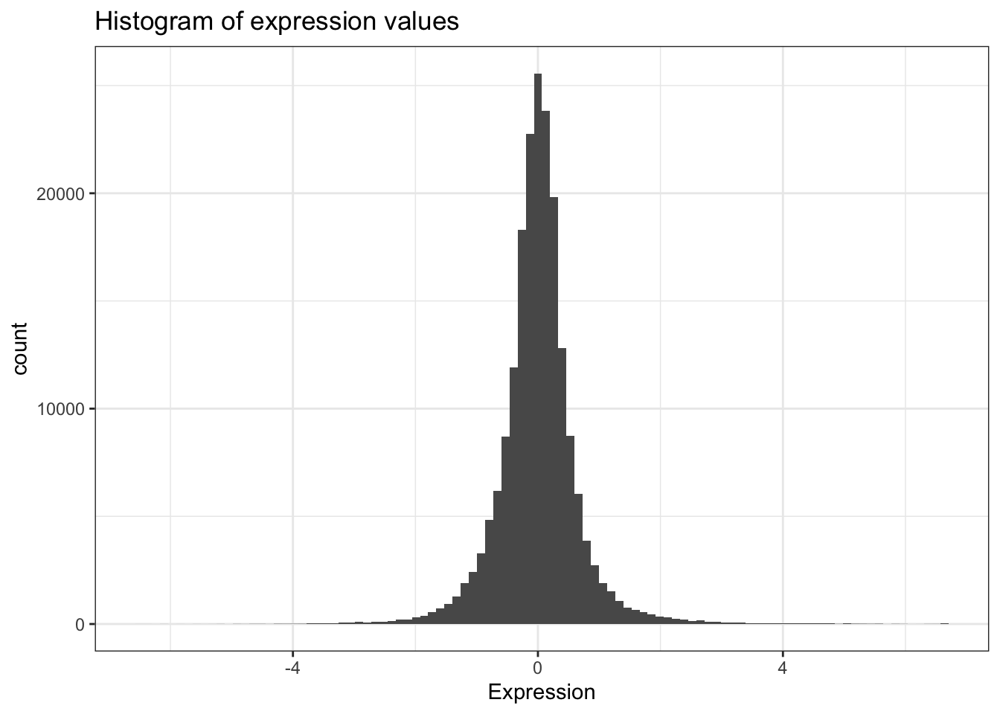

2 Tibbles
There are lots of different basic data structures in R. If you take any kind of longer introduction to R you’ll probably learn about arrays, lists, matrices, etc. Let’s skip straight to the data structure you’ll probably use most – the data frame. We use data frames to store heterogeneous tabular data in R: tabular, meaning that individuals or observations are typically represented in rows, while variables or features are represented as columns; heterogeneous, meaning that columns/features/variables can be different classes (on variable, e.g. age, can be numeric, while another, e.g., cause of death, can be text).
This chapter assumes a basic familiarity with R (see Chapter 1).
Recommended reading: Review the Introduction (10.1) and Tibbles vs. data.frame (10.3) sections of the R for Data Science book. We will initially be using the read_* functions from the readr package. These functions load data into a tibble instead of R’s traditional data.frame. Tibbles are data frames, but they tweak some older behaviors to make life a little easier. These sections explain the few key small differences between traditional data.frames and tibbles.
2.1 Our data
The data we’re going to look at is cleaned up version of a gene expression dataset from Brauer et al. Coordination of Growth Rate, Cell Cycle, Stress Response, and Metabolic Activity in Yeast (2008) Mol Biol Cell 19:352-367. This data is from a gene expression microarray, and in this paper the authors are examining the relationship between growth rate and gene expression in yeast cultures limited by one of six different nutrients (glucose, leucine, ammonium, sulfate, phosphate, uracil). If you give yeast a rich media loaded with nutrients except restrict the supply of a single nutrient, you can control the growth rate to any rate you choose. By starving yeast of specific nutrients you can find genes that:
- Raise or lower their expression in response to growth rate. Growth-rate dependent expression patterns can tell us a lot about cell cycle control, and how the cell responds to stress. The authors found that expression of >25% of all yeast genes is linearly correlated with growth rate, independent of the limiting nutrient. They also found that the subset of negatively growth-correlated genes is enriched for peroxisomal functions, and positively correlated genes mainly encode ribosomal functions.
- Respond differently when different nutrients are being limited. If you see particular genes that respond very differently when a nutrient is sharply restricted, these genes might be involved in the transport or metabolism of that specific nutrient.
You can download the cleaned up version of the data here. The file is called brauer2007_tidy.csv. Later on we’ll actually start with the original raw data (minimally processed) and manipulate it so that we can make it more amenable for analysis.
2.2 Reading in data
2.2.1 dplyr and readr
There are some built-in functions for reading in data in text files. These functions are read-dot-something – for example, read.csv() reads in comma-delimited text data; read.delim() reads in tab-delimited text, etc. We’re going to read in data a little bit differently here using the readr package. When you load the readr package, you’ll have access to very similar looking functions, named read-underscore-something – e.g., read_csv(). You have to have the readr package installed to access these functions. Compared to the base functions, they’re much faster, they’re good at guessing the types of data in the columns, they don’t do some of the other silly things that the base functions do. We’re going to use another package later on called dplyr, and if you have the dplyr package loaded as well, and you read in the data with readr, the data will display nicely.
First let’s load those packages.
If you see a warning that looks like this: Error in library(packageName) : there is no package called 'packageName', then you don’t have the package installed correctly. See the setup chapter (Appendix A).
2.2.2 read_csv()
Now, let’s actually load the data. You can get help for the import function with ?read_csv. When we load data we assign it to a variable just like any other, and we can choose a name for that data. Since we’re going to be referring to this data a lot, let’s give it a short easy name to type. I’m going to call it ydat. Once we’ve loaded it we can type the name of the object itself (ydat) to see it printed to the screen.
ydat <- read_csv(file="data/brauer2007_tidy.csv")
ydat# A tibble: 198,430 × 7
symbol systematic_name nutrient rate expression bp mf
<chr> <chr> <chr> <dbl> <dbl> <chr> <chr>
1 SFB2 YNL049C Glucose 0.05 -0.24 ER to Golgi transport mole…
2 <NA> YNL095C Glucose 0.05 0.28 biological process un… mole…
3 QRI7 YDL104C Glucose 0.05 -0.02 proteolysis and pepti… meta…
4 CFT2 YLR115W Glucose 0.05 -0.33 mRNA polyadenylylatio… RNA …
5 SSO2 YMR183C Glucose 0.05 0.05 vesicle fusion* t-SN…
6 PSP2 YML017W Glucose 0.05 -0.69 biological process un… mole…
7 RIB2 YOL066C Glucose 0.05 -0.55 riboflavin biosynthes… pseu…
8 VMA13 YPR036W Glucose 0.05 -0.75 vacuolar acidification hydr…
9 EDC3 YEL015W Glucose 0.05 -0.24 deadenylylation-indep… mole…
10 VPS5 YOR069W Glucose 0.05 -0.16 protein retention in … prot…
# ℹ 198,420 more rowsTake a look at that output. The nice thing about loading dplyr and reading in data with readr is that data frames are displayed in a much more friendly way. This dataset has nearly 200,000 rows and 7 columns. When you import data this way and try to display the object in the console, instead of trying to display all 200,000 rows, you’ll only see about 10 by default. Also, if you have so many columns that the data would wrap off the edge of your screen, those columns will not be displayed, but you’ll see at the bottom of the output which, if any, columns were hidden from view. If you want to see the whole dataset, there are two ways to do this. First, you can click on the name of the data.frame in the Environment panel in RStudio. Or you could use the View() function (with a capital V).
View(ydat)2.3 Inspecting data.frame objects
2.3.1 Built-in functions
There are several built-in functions that are useful for working with data frames.
- Content:
- Size:
- Summary:
-
colnames()(or justnames()): returns the column names -
str(): structure of the object and information about the class, length and content of each column -
summary(): works differently depending on what kind of object you pass to it. Passing a data frame to thesummary()function prints out useful summary statistics about numeric column (min, max, median, mean, etc.)
-
head(ydat)# A tibble: 6 × 7
symbol systematic_name nutrient rate expression bp mf
<chr> <chr> <chr> <dbl> <dbl> <chr> <chr>
1 SFB2 YNL049C Glucose 0.05 -0.24 ER to Golgi transport mole…
2 <NA> YNL095C Glucose 0.05 0.28 biological process unk… mole…
3 QRI7 YDL104C Glucose 0.05 -0.02 proteolysis and peptid… meta…
4 CFT2 YLR115W Glucose 0.05 -0.33 mRNA polyadenylylation* RNA …
5 SSO2 YMR183C Glucose 0.05 0.05 vesicle fusion* t-SN…
6 PSP2 YML017W Glucose 0.05 -0.69 biological process unk… mole…tail(ydat)# A tibble: 6 × 7
symbol systematic_name nutrient rate expression bp mf
<chr> <chr> <chr> <dbl> <dbl> <chr> <chr>
1 DOA1 YKL213C Uracil 0.3 0.14 ubiquitin-dependent pr… mole…
2 KRE1 YNL322C Uracil 0.3 0.28 cell wall organization… stru…
3 MTL1 YGR023W Uracil 0.3 0.27 cell wall organization… mole…
4 KRE9 YJL174W Uracil 0.3 0.43 cell wall organization… mole…
5 UTH1 YKR042W Uracil 0.3 0.19 mitochondrion organiza… mole…
6 <NA> YOL111C Uracil 0.3 0.04 biological process unk… mole…dim(ydat)[1] 198430 7names(ydat)[1] "symbol" "systematic_name" "nutrient" "rate"
[5] "expression" "bp" "mf" str(ydat)spc_tbl_ [198,430 × 7] (S3: spec_tbl_df/tbl_df/tbl/data.frame)
$ symbol : chr [1:198430] "SFB2" NA "QRI7" "CFT2" ...
$ systematic_name: chr [1:198430] "YNL049C" "YNL095C" "YDL104C" "YLR115W" ...
$ nutrient : chr [1:198430] "Glucose" "Glucose" "Glucose" "Glucose" ...
$ rate : num [1:198430] 0.05 0.05 0.05 0.05 0.05 0.05 0.05 0.05 0.05 0.05 ...
$ expression : num [1:198430] -0.24 0.28 -0.02 -0.33 0.05 -0.69 -0.55 -0.75 -0.24 -0.16 ...
$ bp : chr [1:198430] "ER to Golgi transport" "biological process unknown" "proteolysis and peptidolysis" "mRNA polyadenylylation*" ...
$ mf : chr [1:198430] "molecular function unknown" "molecular function unknown" "metalloendopeptidase activity" "RNA binding" ...
- attr(*, "spec")=
.. cols(
.. symbol = col_character(),
.. systematic_name = col_character(),
.. nutrient = col_character(),
.. rate = col_double(),
.. expression = col_double(),
.. bp = col_character(),
.. mf = col_character()
.. )
- attr(*, "problems")=<externalptr> summary(ydat) symbol systematic_name nutrient rate
Length:198430 Length:198430 Length:198430 Min. :0.050
Class :character Class :character Class :character 1st Qu.:0.100
Mode :character Mode :character Mode :character Median :0.200
Mean :0.175
3rd Qu.:0.250
Max. :0.300
expression bp mf
Min. :-6.50 Length:198430 Length:198430
1st Qu.:-0.29 Class :character Class :character
Median : 0.00 Mode :character Mode :character
Mean : 0.00
3rd Qu.: 0.29
Max. : 6.64 2.3.2 Other packages
The glimpse() function is available once you load the dplyr library, and it’s like str() but its display is a little bit better.
glimpse(ydat)Rows: 198,430
Columns: 7
$ symbol <chr> "SFB2", NA, "QRI7", "CFT2", "SSO2", "PSP2", "RIB2", "V…
$ systematic_name <chr> "YNL049C", "YNL095C", "YDL104C", "YLR115W", "YMR183C",…
$ nutrient <chr> "Glucose", "Glucose", "Glucose", "Glucose", "Glucose",…
$ rate <dbl> 0.05, 0.05, 0.05, 0.05, 0.05, 0.05, 0.05, 0.05, 0.05, …
$ expression <dbl> -0.24, 0.28, -0.02, -0.33, 0.05, -0.69, -0.55, -0.75, …
$ bp <chr> "ER to Golgi transport", "biological process unknown",…
$ mf <chr> "molecular function unknown", "molecular function unkn…The skimr package has a nice function, skim, that provides summary statistics the user can skim quickly to understand your data. You can install it with install.packages("skimr") if you don’t have it already.
| Name | ydat |
| Number of rows | 198430 |
| Number of columns | 7 |
| _______________________ | |
| Column type frequency: | |
| character | 5 |
| numeric | 2 |
| ________________________ | |
| Group variables | None |
Variable type: character
| skim_variable | n_missing | complete_rate | min | max | empty | n_unique | whitespace |
|---|---|---|---|---|---|---|---|
| symbol | 47250 | 0.76 | 2 | 9 | 0 | 4210 | 0 |
| systematic_name | 0 | 1.00 | 5 | 9 | 0 | 5536 | 0 |
| nutrient | 0 | 1.00 | 6 | 9 | 0 | 6 | 0 |
| bp | 7663 | 0.96 | 7 | 82 | 0 | 880 | 0 |
| mf | 7663 | 0.96 | 11 | 125 | 0 | 1085 | 0 |
Variable type: numeric
| skim_variable | n_missing | complete_rate | mean | sd | p0 | p25 | p50 | p75 | p100 | hist |
|---|---|---|---|---|---|---|---|---|---|---|
| rate | 0 | 1 | 0.18 | 0.09 | 0.05 | 0.10 | 0.2 | 0.25 | 0.30 | ▇▅▅▅▅ |
| expression | 0 | 1 | 0.00 | 0.67 | -6.50 | -0.29 | 0.0 | 0.29 | 6.64 | ▁▁▇▁▁ |
2.4 Accessing variables & subsetting data frames
We can access individual variables within a data frame using the $ operator, e.g., mydataframe$specificVariable. Let’s print out all the gene names in the data. Then let’s calculate the average expression across all conditions, all genes (using the built-in mean() function).
# display all gene symbols
ydat$symbol [1] "SFB2" NA "QRI7" "CFT2" "SSO2" "PSP2"
[7] "RIB2" "VMA13" "EDC3" "VPS5" NA "AMN1"
[13] "SCW11" "DSE2" "COX15" "SPE1" "MTF1" "KSS1"
[19] NA NA "YAP7" NA "YVC1" "CDC40"
[25] NA "RMD1" "PCL6" "AI4" "GGC1" "SUL1"
[31] "RAD57" NA "PER1" "YHC3" "SGE1" "HNM1"
[37] "SWI1" "NAM8" NA "BGL2" "ACT1" NA
[43] "SFL1" "OYE3" "MMP1" "MHT1" "SUL2" "IPP1"
[49] "CWP1" "SNF11" "PEX25" "ELO1" NA "CDC13"
[55] "FKH1" "SWD1" NA "HOF1" "HOC1" "BNI5"
[61] "CSN12" "PGS1" "MLP2" "HRP1" NA "SEC39"
[67] "ECM31" NA NA "ADE4" "ABC1" "DLD2"
[73] "PHA2" NA "HAP3" "MRPL23" NA NA
[79] "MRPL16" NA NA NA NA "AI3"
[85] "COX1" NA "VAR1" "COX3" "COX2" "AI5_BETA"
[91] "AI2" NA NA "GPI18" "COS9" NA
[97] NA "PRP46" "XDJ1" "SLG1" "MAM3" "AEP1"
[103] "UGO1" NA "RSC2" "YAP1801" "ZPR1" "BCD1"
[109] "UBP10" "SLD3" "RLF2" "LRO1" NA "ITR2"
[115] "ABP140" "STT3" "PTC2" "STE20" "HRD3" "CWH43"
[121] "ASK10" "MPE1" "SWC3" "TSA1" "ADE17" "GFD2"
[127] "PXR1" NA "BUD14" "AUS1" "NHX1" "NTE1"
[133] NA "KIN3" "BUD4" "SLI15" "PMT4" "AVT5"
[139] "CHS2" "GPI13" "KAP95" "EFT2" "EFT1" "GAS1"
[145] "CYK3" "COQ2" "PSD1" NA "PAC1" "SUR7"
[151] "RAX1" "DFM1" "RBD2" NA "YIP4" "SRB2"
[157] "HOL1" "MEP3" NA "FEN2" NA "RFT1"
[163] NA "MCK1" "GPI10" "APT1" NA NA
[169] "CPT1" "ERV29" "SFK1" NA "SEC20" "TIR4"
[175] NA NA "ARC35" "SOL1" "BIO2" "ASC1"
[181] "RBG1" "PTC4" NA "OXA1" "SIT4" "PUB1"
[187] "FPR4" "FUN12" "DPH2" "DPS1" "DLD1" "ASN2"
[193] "TRM9" "DED81" "SRM1" "SAM50" "POP2" "FAA4"
[199] NA "CEM1"
[ reached getOption("max.print") -- omitted 198230 entries ]#mean expression
mean(ydat$expression)[1] 0.00337Now that’s not too interesting. This is the average gene expression across all genes, across all conditions. The data is actually scaled/centered around zero:

We might be interested in the average expression of genes with a particular biological function, and how that changes over different growth rates restricted by particular nutrients. This is the kind of thing we’re going to do in the next section.
2.5 BONUS: Preview to advanced manipulation
What if we wanted show the mean expression, standard deviation, and correlation between growth rate and expression, separately for each limiting nutrient, separately for each gene, for all genes involved in the leucine biosynthesis pathway?
| nutrient | symbol | mean | sd | r |
|---|---|---|---|---|
| Ammonia | LEU1 | -0.82 | 0.39 | 0.66 |
| Ammonia | LEU2 | -0.54 | 0.38 | -0.19 |
| Ammonia | LEU4 | -0.37 | 0.56 | -0.67 |
| Ammonia | LEU9 | -1.01 | 0.64 | 0.87 |
| Glucose | LEU1 | -0.55 | 0.41 | 0.98 |
| Glucose | LEU2 | -0.39 | 0.33 | 0.90 |
| Glucose | LEU4 | 1.09 | 1.01 | -0.97 |
| Glucose | LEU9 | -0.17 | 0.35 | 0.35 |
| Leucine | LEU1 | 2.70 | 1.08 | -0.95 |
| Leucine | LEU2 | 0.28 | 1.16 | -0.97 |
| Leucine | LEU4 | 0.80 | 1.06 | -0.97 |
| Leucine | LEU9 | 0.39 | 0.18 | -0.77 |
| Phosphate | LEU1 | -0.43 | 0.27 | 0.95 |
| Phosphate | LEU2 | -0.26 | 0.19 | 0.70 |
| Phosphate | LEU4 | -0.99 | 0.11 | 0.24 |
| Phosphate | LEU9 | -1.12 | 0.53 | 0.90 |
| Sulfate | LEU1 | -1.17 | 0.34 | 0.98 |
| Sulfate | LEU2 | -0.96 | 0.30 | 0.57 |
| Sulfate | LEU4 | -0.24 | 0.43 | -0.60 |
| Sulfate | LEU9 | -1.24 | 0.55 | 0.99 |
| Uracil | LEU1 | -0.74 | 0.73 | 0.89 |
| Uracil | LEU2 | 0.18 | 0.13 | -0.07 |
| Uracil | LEU4 | -0.65 | 0.44 | 0.77 |
| Uracil | LEU9 | -1.02 | 0.91 | 0.94 |
Neat eh? We’ll learn how to do that in the advanced manipulation with dplyr chapter.